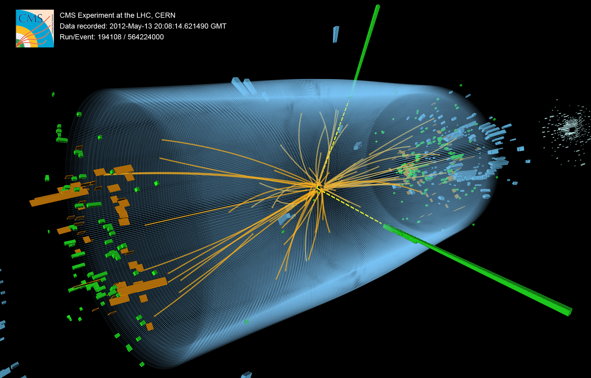
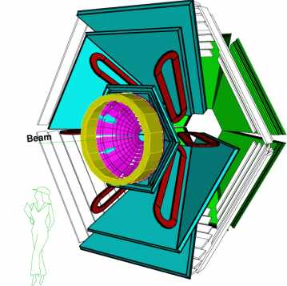
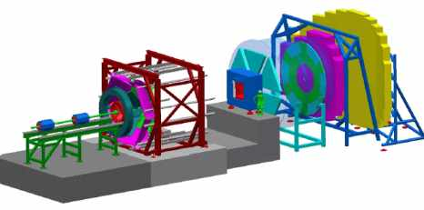

Research
The Compact Muon Solenoid (CMS) experiment at European Laboratory for Particle Physics (CERN), Geneva, SWITZERLAND.

The HADES Experiment at the Heavy-Ion Research Center of GSI.

The CBM Experiment at the Heavy-Ion Research Center of GSI.

-
CMS experiment
We are on the threshold of a new era in particle-physics research. The field of high energy physics is approaching an important period of its history with the start of the operations of the Large Hadron Collider (LHC) at CERN, the world’s largest and highest-energy particle accelerator. One of the primary objectives of the Large Hadron Collider (LHC) experimental programme is to elucidate the origin of mass, in particular by discovering the Higgs boson predicted by the Standard Model (SM). The Large Hadron Collider at CERN in Geneva will be the tool to study the phenomenological observables of the electroweak symmetry breaking. It will collide protons on protons with a centre of mass energy of √s = 14 TeV and a design luminosity of L = 1034 cm−2s−1. For an initial period of three years the luminosity is expected to be an order of magnitude lower. The experimental environment in the LHC is characterised by high luminosity and a short bunch crossing interval. High luminosity is synonymous with a high collision rate. In a proton-proton collision the interacting objects are the valence quarks, gluons or sea quarks or antiquarks of the proton. The energy available to the collision is determined by the fraction of the total proton energy carried by the colliding parton.
The Standard Model describes the phenomena of physics starting from our everyday electromagnetic interactions down to the scale of strong and weak interactions which have been probed up to energies of 200 GeV. Electromagnetic interactions govern the physical phenomena down to the distances of an atom (10−10 m). Then, the strong interaction takes over to hold the protons and neutrons in an atomic nucleus (10−14 m) and to keep the quarks in protons and neutrons (10−15 m) together. Further down the distance scale (10−19 m), the effects of the W and Z bosons, the carriers of the weak interaction, become important. This is where we are now. With the LHC we can hope to gain one more scale in the distance ladder, arriving to energies of the order of TeV, and hopefully discovering the origins of the spontaneous symmetry breaking of the electroweak interactions. At much smaller distances — or at much higher energies — we finally arrive to the Planck scale (1019 GeV) where the quantum gravity should become comparable and unified to the other forces. The Standard Model, however, does not include the gravitational force. Our description must be incomplete.
In the Standard Model (SM) electroweak symmetry breaking is achieved
via the introduction of one Higgs doublet. Only one neutral Higgs
boson is predicted. Extended Higgs sector with two complex Higgs
doublets in Minimal Supersymmetric Standard Model (MSSM), leading to
two neutral CP-even (h, H), one CP-odd (A), and a pair of charged ( )
Higgs boson. Also, previous studies claim that at least one higgs
boson of the Next-to-Minimal Supersymmetric SM (NMSSM) will most
likely be observable at the LHC. In our search we focused in the
higgs boson of the NMSSM. In the framework of the NMSSM, the
μ-problem
of the MSSM is solved by introducing an additional neutral singlet
superfield S. The two additional neutral scalar bosons, contained in
S mix with the MSSM higgs bosons to form the five neutral higgs
bosons of the NMSSM: three CP-even bosons h1, h2,
h3 and two CP-odd higgs bosons
α1,
α2.
The phenomenology of the charged higgs bosons h±
is only modified marginally with respect to the MSSM. In this
proposal, we intend to study the lightest CP-even higgs particle
)
Higgs boson. Also, previous studies claim that at least one higgs
boson of the Next-to-Minimal Supersymmetric SM (NMSSM) will most
likely be observable at the LHC. In our search we focused in the
higgs boson of the NMSSM. In the framework of the NMSSM, the
μ-problem
of the MSSM is solved by introducing an additional neutral singlet
superfield S. The two additional neutral scalar bosons, contained in
S mix with the MSSM higgs bosons to form the five neutral higgs
bosons of the NMSSM: three CP-even bosons h1, h2,
h3 and two CP-odd higgs bosons
α1,
α2.
The phenomenology of the charged higgs bosons h±
is only modified marginally with respect to the MSSM. In this
proposal, we intend to study the lightest CP-even higgs particle which has enough phase space for the decay into the two pseudoscalar
higgs particles,
which has enough phase space for the decay into the two pseudoscalar
higgs particles, 
The search for the Higgs particle is pursued at CERN with the Large Electron-Positron (LEP) Collider. The experiments at LEP have been able to exclude a certain mass range (mH > 114 GeV) and it seems probable that the LHC will be the instrument to study the Higgs sector, or to find an alternative explanation if no Higgs boson will be discovered.
The Compact Muon Solenoid (CMS) experiment is a general-purpose detector designed to exploit the physics of proton-proton collisions at a center-of-mass energy of 14 TeV over the full range of luminosities expected at the LHC. The CMS experiment consists of:
§ Muon detector which, is of central importance for the Higgs boson searches in the decay channel Higgs into four muons, and the heavy gauge boson Z0, into two muons.
§ Hadron Calorimeter for the measurement of the particle jets (quark and gluon) positions and energies, it can also measure the missing transverse energy; this will increase the capability to detect new Higgs decay channels.
§ Tracker detector with high detection efficiency with a combined of high magnetic field. The task of the inner tracking is to reconstruct high momentum tracks primary and secondary vertices.
§ The Electromagnetic Calorimeter (ECAL) at CMS will play an essential role in the study of the electroweak symmetry breaking, particularly through the exploration of the Higgs sector. In the intermediate Higgs mass range (100 GeV <mH <150 GeV) the H --> γγ decay mode, despite its small branching ratio, provides a distinctive signature for its discovery at the LHC.
One of the major reducible backgrounds to the channel H --> γγ is from neutral pions (π0) in jets, which fake single isolated photons. In the barrel region the ECAL crystal can be used for γ – π0 separation with a good efficiency. In about half of the H --> γγ decays at least one of the photons will fall in the rapidity interval covered by the Endcaps. In this region, the π0’s have higher energies than in the barrel and decay into two closely-spaced (of the order of few mm) photons, which are indistinguishable from single photons using only the information providing by the ECAL crystals. The Endcap Preshower, a position-sensitive device with high granularity, is placed in front of the ECAL crystals. This devise can give a significant boost to the γ – π0 discrimination.
Develope a new algorithm for gamma- pi0 separation with the help of the preshower detector, based on neural net approaches. The algorithm that be developed could be used not only in off line analysis but also for the rejection of neutral poins at the second level trigger stage as well. At this stage, the converted photons can not be tagged since no tracker information will be available. Thus, the investigation of the possibility of neutral pion rejection at this level, using only information from the Preshower detector in combination with the Electromagnetic Calorimeter (ECAL) detector, is of a particular interest for the CMS Collaboration. The technique gave a significant improvement in the neutral pion rejection over previous conventional analyses.
Involve in the research and development of the Preshower silicon detector single sided, in order to define the clear specifications of the design and the technology. Worke on the design of the DC coupled single sided Si detectors. The design includes four masks for implantation, contacts, metalization and passivation. Masks are designed with the CADENCE design package for fabrication of detectors on 4 inches Si wafers. The silicon sensors are made on 4" wafers, 320 μm thick, with a total area of 63 × 63 mm2. The sensors are single sided with 32 strips at a pitch of 1.9 mm. The p+ strips are directly coupled to the aluminium readout strips. The surface is passivated with openings of 1.5 × 6 mm2 to allow automatic probing with a probe card with two raws of pins. Detectors are fabricated at the silicon fabrication facilities of the Microelectronics Institute working within N.C.S.R. DEMOKRITOS in Greece. The process fabrication with 3 photolithography steps includes 2 thermal oxidation steps, boron implantation, back side phosphor implantation and thermal annealing. The metalization with aluminium is preformed with a thermal evaporator. Due to the fact that the mask aligner that is currently in use is a modified 3-inch device, part of the test structures placed in the periphery of the wafer are not properly illuminated.
Study the C/V and I/V characteristics of the detectors, in order to measure their breakdown voltage and their leakage current. Electrical characterization of the detectors was performed with a prober station enclosed on a light tight box with temperature stabilized at 15 oC. A PC-based LABVIEW system, controlling an HP4192A LCR meter and a KEITLHEY 6517 electrometer, was automatically tracing C/V and I/V curves up to 500 volts. For the depletion layer capacitance all the strips are bonded together and the capacitance is measured between the strips and the backplane. Originally the Preshower sensors had a total area of 60 x 60 mm2 and a pitch of 1.81 mm. This size was increased to 63 x 63 mm2 and the pitch to 1.9 mm in order to take advantage of the whole 4” wafer surface. At the same time we have varied the gap between strips searching for an optimum from the noise, the cross-talk and the charge collection uniformity points of view. We find that the capacitance decreases strongly when increasing the gap. I have drive in the same results by calculating the silicon detector capacitances through two dimensional numerical solution of the Laplace equation. We find also that the cross-talk decreases strongly when increasing the gap but the charge collected decrease. However, with a large interstrip distance, of the order of half of the wafer thickness, the electric field is not uniform, leading to non-depleted zones of considerable volume. Charge carriers created in these regions will recombine and will be lost.
Study the radiation hardness of these. The goal is to make sure that the produced Silicon detectors for the Preshower will survive in the difficult radioactive environment for at least 10 years, which is the expected life time of the CMS experiment.
-
Hades experiment
Heavy-ion collisions at relativistic energies provide a unique opportunity to create and investigate in the laboratory harmonic matter properties, such as effective masses, decay widths, electromagnetic form factors etc., under extreme conditions of high density and high temperature. A special class of hadrons is the so-called light vector mesons (r, w, and f). When emitted in a nuclear collision, where high excitation energies and densities are reached, their short life time (few fm/c) is comparable to the life time of the fireball, so they can be used as a probe for the nuclear matter at those extreme conditions. These mesons have a rare electromagnetic decay channel into an electron-positron pair (branching ratios ~ 10-5), which is considered as one of the most promising decay modes for studying in-medium properties.
By changing the experimental conditions (beam energy, reaction target) one can measure the decay properties of these vector mesons at different hadronic densities and temperatures. There is an interesting theoretical expectation that Chiral symmetry, a fundamental symmetry of QCD, might be partially restored in the presence of high baryonic densities even at low temperature. Chiral symmetry restoration is evidenced in a decrease of the magnitude of the Chiral condensate with a corresponding decrease of the constituent quark mass. In-medium vector meson masses are thus modified, reflecting the change in constituent quark mass. The in-medium vector meson mass is a measurable quantity through the kinematical reconstruction of the electron pair. Data on strange meson production and the collective flow of nucleons obtained with the KaoS and FOPI detectors at GSI provide information on the nuclear matter equation of state up to about three times the saturation density. Experimental results indicate that the properties of strange mesons are modified in dense nuclear matter. The possible modification of in-medium properties of vector mesons can be experimentally studied with the Dilepton Spectrometer HADES at GSI. The HADES spectrometer is consists of a fast hadron-blind Ring Imaging Cherenkov (RICH) counter with gas radiator and solid CsI photocathode, placed around a segmented target, is used for electron identification. Four Multi-wire Drift Chambers (MDC1-MDC4) together with a superconducting magnet, form the magnetic spectrometer for momentum measurement with an expected invariant mass resolution of 1-2% in the ρ/ω region. A set of electromagnetic Pre-Shower detectors, together with a TOFINO (18o < θ < 45o) and a Time-Of-Flight (TOF, 45o < θ < 85o) scintillator walls, constitute the Multiplicity and Electron Trigger Array (META).
Since November 2002 I joined the HADES experiment group at the Heavy-Ion Research Center of GSI. I worked on reconstructed and analysis Hadron Identifications Algorithm. The particle identification method is used to identify the particle type, by using the full experimental information from all subdetectors. The basic of the method is test of hypothesis, that the reconstructed track with a given momentum can be identified as certain particle specie (electron, pions and proton). The identification of the various hadrons in the HADES detectors is based on the probability density function (p.d.f) of the detector observables. For each of the particle species, one can calculate the distribution of the probability for a given particle to belong to that species, using Bayes theorem. Hadron identification is performed mainly on the basis of the measured momentum, velocity and energy loss in the TOF, TOFINO and SHOWER detectors. For the lepton identification, mainly data from the RICH Cerenkov and the SHOWER detectors are used.
I have also studied the emission of π± mesons in the symmetric collision system 12C+12C at 1 and 2A GeV in order to extract the effective source rapidities based on their distribution in the pt -y plane. Good knowledge of hadron production is in fact also important for the dielectron analysis, as neutral-pion decays constitute by far the dominant source of lepton pairs in this bombarding-energy regime. Rapidity and transverse momentum distributions allow to address some important questions on the reaction dynamics and on properties of the particle emitting source: Are the nucleons slowed down to the extend that their motion is entirely thermal or is nuclear matter becoming transparent at high energies, is the source spherical symmetric or elongated, is there a transverse and longitudinal expansion, is the source thermally equilibrated?
I have worked in close collaboration with the HADES Simulation and Analysis group of GSI. The main activities were on the integration of the whole Hades simulation and analysis software packages (PLUTO, HGEANT, and HYDRA). I also have installed and tested on our cluster the complete HADES analysis and simulation software packages (ROOT, PLUTO, UrQMD, HGEANT, HYDRA and Oracle interface).
The executive board of the HADES collaboration has assigned to me the responsibility of the UrQMD/GEANT simulations and data analysis production in AA collisions.
I participated in all the HADES data taking activities and in most of my shifts I was the shift leader:
§ November 2002: C + C at 2A GeV, production runs
§ September 2003: p + p at 1 and 2 GeV, commissioning run.
§ January 2004: p + p at 2.2 GeV, production run.
§ August 2004: C + C at 1AGeV, production run.
§ September 2005: Ar + KCl at 1.76AGeV, production run.
§ May 2006: p + p at 1.25 GeV, production run
§ April 2007: p + p at 3.5 GeV, production run
§ May 2007: p + d at 1.25 GeV/u, production run
The mean parts of my responsibilities during data taking were the control of Data Acquisition (DAQ) and Qualifying Assessment (QA).
-
CBM experiment
A new collaboration has been formed at GSI to design and build the Compressed Baryonic Matter (CBM) Experiment at the future accelerator facility of GSI. The main task of the CBM experiment is to identify both leptons and hadrons and to detect rare probes in a heavy ion environment. The CBM experiment will therefore offer the possibility to determine particle multiplicities and phase-space distributions of hyperons, the collision centrality, and the reaction plane. The apparatus should be able to investigate the heaviest collision systems at a broad range of incident beam energies.
The CBM experiment will be performed with two detector systems. One of them is the existing HADES spectrometer, which will measure di-lepton pairs and hadrons for beam energies up to about 8´A GeV. The second detector system of the CBM experimental setup will measure di-lepton pairs and hadrons up to beam energies of about 40´A GeV